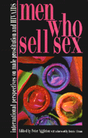

<body bgcolor="#FFFFFF" text="#000000" link="#0000FF" vlink="#CC0000" alink="#CC0000"><center><hr width="350" size="1" align="center" noshade>An authoritative collection of vivid ethnographies and policy recommendations from both industrialized and developing countries<hr width="350" size="1" align="center" noshade><p><a href="https://cdcshoppingcart.uchicago.edu/Cart/ChicagoBook.aspx?ISBN=9781566396684&&PRESS=temple" target="_top">Buy this book!</a> | <a href="https://cdcshoppingcart.uchicago.edu/Cart/Cart.aspx?PRESS=temple" target="_top">View Cart</a> | <a href="https://cdcshoppingcart.uchicago.edu/Cart/Cart.aspx?PRESS=temple" target="_top">Check Out</a></p><p></p></center><!--none//--><h1>Men Who Sell Sex</h1>
<H2>International Perspectives on Male Prostitution and HIV/AIDS</H2>
<h3>edited by Peter Aggleton</h3>
<P>cloth 1-56639-668-9 $61.50, Dec 98, <FONT COLOR=#990033>Out of Stock Unavailable</FONT>
<br>paper 1-56639-669-7 $36.95, Dec 98, <FONT COLOR=#990033>Available</FONT>
<BR> 296 pp
6x9
<BR>&nbsp;<br>Restricted: North America only (NA)
</P><BLOCKQUOTE><I>"What is exciting about this book is that it crosses so many boundaries, bringing together as it does accounts from every continent and from a wide range of disciplines. The various authors seek to situate sex-work within a range of frameworks: sociological and psychological, but also historical (Sri Lanka), economic (Britain and the United States), political (Brazil), legal (Canada), even linguistic (Thailand)."</I>
<BR>&#151<B>Dennis Altman</B>, from the Foreword<I></I></BLOCKQUOTE>
<P>While much is known about prostitution and sex-work, almost all research has been conducted among female sex-workers and their clients. Studies of men who sell sex, either to women or to other men, are much more rare. Particularly poorly understood are men's motivations for engaging in such work, the circumstances in which the sale of sex occurs, the meanings attached to the acts by both sex-worker and client, and the HIV-related risks involved.
<P><I>Men Who Sell Sex</I> remedies this major deficiency in the international literature by bringing together an authoritative collection of essays from experts in 21 countries, including the USA, Canada, the UK, the Netherlands, Morocco, India, the Philippines, Thailand, Mexico, the Dominican Republic, Brazil and Peru. It is a book which aims to demystify a taboo area, to dispel some widely held misconceptions about sex-workers and the spread of AIDS, and to contribute to better health promotion work.
<P><I>Men Who Sell Sex</I> offers a unique and compelling account of the reasons men sell sex and the pleasures and risks involved.
<BR>&nbsp;<h2>Excerpt</h2><P>Excerpt available at <a href="http://www.temple.edu/tempress">www.temple.edu/tempress</a></p>
<BR>&nbsp;<h2>Reviews</h2>
<p><I>"This international collection was put together to be a multi-national response to the lack of information about male prostitution throughout the world. Spanning Europe, Latin America, India, and North Africa, this collection of policy recommendations is put together from interviews with the prostitutes by regional experts, who also offer recommendations on the value of different kinds of health promotion and intervention efforts."</I>
<BR>&#151<b><I>Lambda Book Report</I></b>
<p><i>"Each chapter provides fascinating data, gathered primarily through interviews and ethnographies, on the lives of men in this occupation.... This volume is the first to bring together male prostitution in a global perspective...[and it] makes contributions to studies of sexuality and lesbians in the workplace as well as to military sociology. By implication, it also makes important contributions to public policy debates on gays in the military."</i>
<br>&#151<b><i>Contemporary Sociology</i></b>
<p><i>"A big asset of the book is the inclusion of sex workers' narratives.... [this book offers] original and important contributions to a nascent area of study... [and] constitute[s] an enlightening reading for health and sex educators and a welcome addition to the literature on sexuality and gender."</i>
<br>&#151<b><i>Journal of Sex Research</i></b>
<BR>&nbsp;<h2>Contents</h2><P>
<p>Acknowledgments
<br>Notes on Contributors
<br>Foreword &#150 Dennis Altman
<br>1. Selling Sex in Cardiff and London&#150 Peter Davies and Rayah Feldman
<br>2. Sex for Money between Men and Boys in the Netherlands: Implications for HIV Prevention &#150 Wim Zuilhof
<br>3. <I>Travestis</I> and <I>Gigolos</I>: Male Sex Work and HIV Prevention in France &#150 Lindinalva Laurindo da Silva
<br>4. Male Sex Work and HIV/AIDS in Canada &#150 Dan Allman and Ted Myers
<br>5. Social Environment and Male Sex Work in the United States &#150 Edward V. Morse, Patricia M. Simon and Kendra E. Burchfiel
<br>6. Aspects of Male Sex Work in Mexico City &#150 Ana Luisa Liguori and Peter Aggleton
<br>7. Three Decades of Male Sex Work in Santo Domingo &#150 E. Antonio de Moya and Rafael García
<br>8. <I>Cacherismo</I> in a San José Brothel: Aspects of Male Sex Work in Costa Rica &#150 Jacobo Schifter and Peter Aggleton
<br>9. Natural Born Targets: Male Hustlers and AIDS Prevention in Urban Brazil &#150 Patrick Larvie
<br>10. <I>Fletes</I> in Parque Kennedy: Sexual Cultures among Young Men Who Sell Sex to Other Men in Lima &#150 Carlos F. Cáceres and Oscar G. Jiménez
<br>11. Through a Window Darkly: Men Who Sell Sex to Men in India and Bangladesh &#150 Shivananda Khan
<br>12. Male Sex Work in Sri Lanka &#150 Nandasena Ratnapala
<br>13. Bar Talk: Thai Male Sex Workers and Their Customers &#150 Graeme Storer
<br>14. Walking the Tightrope: Sexual Risk and Male Sex Work in the Philippines &#150 Michael L. Tan
<br>15. Marginalization and Vulnerability: Male Sex Work in Morocco &#150 Amine Boushaba, Oussama Tawil, Latéfa Imane and Hakima Himmich
<br>Index
</P><BR>&nbsp;<H2>About the Author(s)</H2>
<P><B>Peter Aggleton</B> is Professor of Education and Director of the Thomas Coram Research Unit at the Institute of Education, University of London, UK. He is the editor of the Social Aspects of AIDS series of books and of the journal <I>Culture, Health, and Sexuality</I>. He has written or edited over twenty books in the field, including (with Richard Parker) <I>Culture, Society, and Sexuality</I> (1998).</P>
<BR><H2>Subject Categories</H2>
<p><A HREF="/tempress/sexual.html" TARGET="_top">Sexuality Studies/Sexual Identity</a>
<BR><A HREF="/tempress/health.html" TARGET="_top">Health and Health Policy</a>
</p>
<p align="center"><a href="https://cdcshoppingcart.uchicago.edu/Cart/ChicagoBook.aspx?ISBN=9781566396684&&PRESS=temple" target="_top">Buy this book!</a> | <a href="https://cdcshoppingcart.uchicago.edu/Cart/Cart.aspx?PRESS=temple" target="_top">View Cart</a> | <a href="https://cdcshoppingcart.uchicago.edu/Cart/Cart.aspx?PRESS=temple" target="_top">Check Out</a></p><p><font face="Arial" size="1"><a href="copyright.html" onMouseOver="window.status='Web Copyright Policy';return true;" onMouseOut="window.status=''" title="Web Copyright Policy">&copy;</a> 2015 <a href="http://www.temple.edu" target="new" onMouseOver="window.status='Link to Temple University home page';return true;" onMouseOut="window.status=''" title="Link to Temple University home page">Temple University</a>. All Rights Reserved. http://www.temple.edu/tempress/titles/aggle_reg.html</font></p>